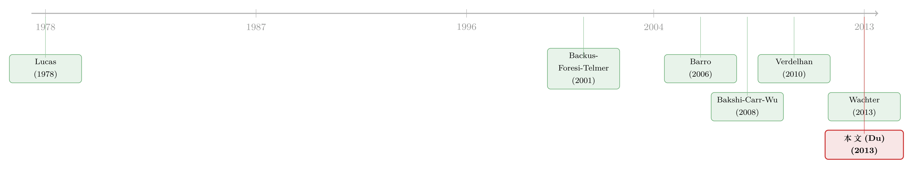

汇率为什么「不肯」波动？——一场跨国共享的灾难，如何同时定价了货币与货币期权
本文读的是 Du (2013, Journal of Financial Economics)：把「高度但不完全共享的稀有灾难」放进一个递归效用的一般均衡里，作者用同一套参数，同时复现了货币期权的低平价隐含波动率（约 9%）、会变号的风险中性偏度、UIP 反常（斜率 ≈ -2）以及套息交易的前两阶矩。核心只有一句话：汇率只对那些「没被两国共享」的冲击做出反应。
1 引言：四个互相打架的「常识」
外汇市场是世界上最大的金融市场。可越是大，它身上那些「定价规律」就越难被一个统一的故事讲清楚。我们先把这四件「人人都知道、却谁也说不拢」的事摆在桌面上。
第一，平价 (at-the-money, ATM) 货币期权的隐含波动率出奇地低——通常只有 8–12%（Carr and Wu, 2007）。这本身就尴尬：传统的消费型资产定价模型一算，隐含波动率往往比数据高出一个数量级还不止（Brandt, Cochrane, and Santa-Clara, 2006）。换句话说，标准模型让汇率「抖」得太厉害了。
第二，把隐含波动率画成行权价（moneyness）的函数，平均来看是一条 U 形的「微笑」曲线；而这条曲线的斜率——它度量的是货币收益的风险中性偏度（risk-neutral skewness）——会随时间剧烈变化，甚至频繁地正负变号。也就是说，偏度是随机的。
第三，是那道经久不衰的 UIP 反常。按照无抛补利率平价 (uncovered interest parity, UIP)，把汇率变动对利差做回归，斜率应该是 1。可自 Fama (1984) 以来，实证里的斜率却一贯为负——高息货币不但没贬，反而倾向于升值。
第四，正是吃着这口「高息货币会升值」的饭，传统的套息交易（carry trade，借低息货币、买高息货币）平均能赚到可观、但波动剧烈的收益。
四件事，四套解释。能不能用一个机制把它们一锅端？这正是 Du (2013) 想干的事。
2 一个核心：被「不完全共享」的灾难
先说结论里那个最反直觉、也最关键的支点。
很多人对「灾难」的第一反应是：「一场只砸 A 国、不砸 B 国的灾难」。但作者提醒我们换个角度——看 Barro (2006) 那张表，二战这种级别的灾难，其实是在不同的时点砸向各个主要经济体的。从这个意义上说，哪怕是一场全球性的大灾难，在跨境的视角下也不是被完美共享的。
这件事为什么重要？因为期权价格对跳跃（jump）极度敏感。于是，哪怕只有一小撮灾难成分没被两国共享，也足以在横截面上掀起数据里观察到的那种巨大波动。
这就是全文的「阿基米德支点」：灾难高度共享，所以汇率不必怎么抖动就能堵住跨国套利——这给出了低的平价隐含波动率；灾难又不完全共享，残下来那一点不对称，就足以制造出会变号的偏度、UIP 反常和套息收益。一松一紧，全在「共享程度」这一个旋钮上。
接下来，我们就一步步把这台机器拆开看。
3 模型设定：消费、灾难强度与递归效用
3.1 带可变强度的灾难
沿着 peso problem 那条传统（Barro, 2006），本国总消费 C_t 服从一个带泊松跳跃的过程：
$$\frac{dC_t}{C_t} = \mu\, dt + \sigma\, dB_{ct} + \left(e^{Z}-1\right) dN_t$$
这里 dB_ct 是标准布朗运动；dN_t 是到达强度为 λ_t dt 的泊松跳，刻画罕见的经济灾难；Z<0 是灾难发生时的对数消费跳幅（为简化设为常数）。
真正的巧思在于让灾难强度本身随机（跟随 Wachter, 2013）：
$$d\lambda_t = \kappa\left(\bar\lambda - \lambda_t\right) dt + \sigma_\lambda \sqrt{\lambda_t}\, dB_{\lambda t}$$
那个根号项（square-root，CIR 型）让 λ_t 的平稳分布高度右偏：有些时候「罕见」灾难其实很可能发生，但这些「高危时刻」本身又很罕见。平均而言，灾难以强度 λ̄ 到来。
外国（上标 n）在「完全对称」(complete symmetry) 的假设下，参数完全一样，过程同构。关键的一步在于，作者把每国的泊松过程分解成全球成分与国别成分：
$$dN_t = dN^h_t + dN^g_t, \qquad dN^n_t = dN^f_t + dN^g_t$$
其中 N^h、N^f 分别是本国、外国特有的灾难（强度 λ^h_t、λ^f_t），N^g 是两国共享的全球灾难（强度 λ^g_t），三者互相独立。每个国别/全球强度各自服从一个独立的 CIR 过程（式 5–7）。
这一步——对带随机强度的泊松过程（也叫 Cox 过程）做分解——作者说是文献里的新结果：两个强度互相独立的 Cox 过程之和，仍是 Cox 过程（论文附录 A.1 给出了证明）。它是整篇文章能写成闭式解的技术地基。
3.2 递归效用与定价核
代表性投资者拥有 Duffie and Epstein (1992) 的随机微分效用——也就是 Kreps and Porteus (1978)、Epstein and Zin (1989) 那套递归效用 (recursive utility) 的连续时间版本：
$$J_t = E_t\!\left[\int_t^\infty f\!\left(C_s, J_s\right) ds\right]$$
它的好处是把风险厌恶 γ 和跨期替代弹性 (elasticity of intertemporal substitution, EIS) ψ 分开。由齐次性，价值函数 J_t 在 C_t 与 λ_t 上可分离，而财富-消费比 (wealth-consumption ratio, W/C) 可以写成强度的对数线性形式：
$$I(\lambda_t) = e^{a + b\lambda_t}$$
这里 a、b 是两个常数。b 的符号是全篇直觉的开关：当 ψ>1 时，b<0。为什么？强度 λ_t 一上升，意味着未来灾难更可能砸下来、未来消费可能大幅缩水。一方面收入效应让人今天少消费、抬高 W/C；另一方面跨期替代效应让人想「向未来借钱」、压低 W/C。当 ψ>1 时替代效应占上风，于是 W/C 随 λ_t 下降，即 b<0。
把这些代进 Duffie-Epstein 的定价核公式，得到本文的核心方程之一——本国（实际）定价核（pricing kernel）：
最后那一项 I(λ_t)^{θ-1} 是与传统 CRRA 模型分道扬镳的地方：在递归效用下，投资者不只在意当期消费冲击，还在意未来消费增长的前景。当 γ>1 且 ψ>1（通常的校准）时，定价核 M_t 对 λ_t 是正向载荷的——投资者一旦察觉灾难概率上升，边际效用立刻飙高。记住这一点，下文的偏度故事全靠它。
对 M_t 用带跳的 Itô 引理，可以得到 dM_t/M_t 的随机微分（式 15），它干净地分成「全球成分」与「本国特有成分」两块。
4 真正关键的一步：汇率 = 两国定价核之比
到这里，所有的工具都备齐了。但真正把故事点亮的，是那个无套利条件。
令 S_t 为本币计价的一单位外币价格。两国之间的无抛补无套利要求，汇率恰好等于两国定价核之比（Backus, Foresi, and Telmer, 2001）：
$$S_t = \frac{M^n_t}{M_t}$$
这个等式看似平平无奇，威力却惊人。把 M_t 与 M^n_t 的动态代进去，在完全对称下推导名义汇率 S$_t 的过程（式 21），会发现一件干净到不可思议的事：
汇率的动态，只由那些「没被两国共享」的冲击驱动。 所有的全球成分——全球扩散、全球灾难 dN^g——在两国定价核相除时完全抵消了。剩下来推动 dS\(_t/S\)_t 的，只有 γσ(dB_ct − dB^n_ct)（不对称的消费扩散）、不对称的强度冲击，以及 (e^{γZ}−1)dN^h_t + (e^{−γZ}−1)dN^f_t（本国/外国特有灾难的到达）。
这一下就把第一个谜题解了：因为灾难是高度共享的，绝大部分冲击在相除时被抵消，汇率不需要剧烈波动就能维持无套利——于是平价隐含波动率天然就低。模型生成约 9%，对照数据里 JPYUSD、GBPUSD 报价隐含的 10–11%，已经相当接近，而传统消费模型动辄高一个数量级。
（关于「汇率风险溢价究竟藏在什么地方」，本博客另有两篇可对照阅读：《汇率藏在一张「违约保单」的价差里》与《汇率里那块「找不到」的风险溢价》。）
5 偏度从哪来：一个会「变号」的三阶矩
接着，一个自然的问题是：那条会变号的偏度微笑，又是怎么冒出来的？
作者先看一个特例：当 λ_s、π 全是常数时，货币收益的二、三、四阶累积量（cumulant）有漂亮的闭式解：
$$c_2 = (\gamma Z)^2(\lambda^h + \lambda^f) + V_d$$ $$c_3 = (\gamma Z)^3(\lambda^h - \lambda^f)$$ $$c_4 = (\gamma Z)^4(\lambda^h + \lambda^f)$$
其中 \(V_d = (\theta-1)^2(b\sigma_\lambda)^2(\lambda^h+\lambda^f) + 2(\gamma\sigma)^2(1-\rho_C) + 2\sigma_P^2\) 是扩散成分贡献的方差。
这三行公式藏着三个洞见。第一，扩散成分不贡献高阶矩——偏度峰度全是跳跃带来的。第二，三阶累积量 c_3 正比于 (λ^h − λ^f)：只要本国与外国的特有灾难强度不相等，货币收益就有非零偏度；强度差为正还是为负，决定了偏度的符号。第三，四阶矩 c_4 正比于 (λ^h + λ^f)，只要灾难没被完全共享（λ^h + λ^f > 0）就严格为正——这就是肥尾。
但这个特例有个硬伤：所有累积量都是常数，没法解释「偏度是随机的」。于是反转出现——在完整模型里，让 λ^h_t、λ^f_t 各自随机且独立地演化，偏度自然就活了过来。机制是这样的：当本国特有强度 λ^h_t 正向跳一下，由于定价核对 λ 正向载荷（第 3.2 节那个关键性质），本国定价核相对外国上升，从 S_t = M^n_t/M_t 看，外币随之贬值、收益出现负偏度；外国 λ^f_t 的冲击则反向。两国特有强度此消彼长，偏度就随机地变号。
定量上，作者用三个月、十-delta 的风险逆转 (risk reversal, RR) 来度量偏度——它是对称行权价下的 OTM 看涨与 OTM 看跌期权之价差。模型隐含的 RR 标准差是 18.6%，对照 JPYUSD、GBPUSD、GBPJPY 的数据分别为 19.0%、13.4%、15.3%。能把「偏度有多么剧烈地摆动」也对上，是相当硬的检验。
6 UIP 与套息：同一个 (λ^h − λ^f)
到这一步，剩下的两块拼图几乎是顺手就落下了——因为它们和偏度共用同一个驱动 (λ^h_t − λ^f_t)。
先看利率。用 r_t ≡ −E_t(dM_t/M_t)，可以推出本国实际短利率（式 22），再转成名义、做两国相减，得到关键的利差表达式（式 23）：在合理参数下，名义利差 r\(_t − r\)^{n}_t 对 (λ^h_t − λ^f_t) 负向载荷。直觉很顺：当本国特有灾难强度 λ^h_t 高于外国时，本国投资者出于更强的预防性储蓄动机而存得更多，把本国实际利率压低。于是较低的 λ^f_t（外国更安全）对应外币付出更高的名义利率。
再把这件事和第 5 节的偏度故事拼起来：高息的那一国（λ^f 低、更安全），其货币恰恰倾向于升值——这正是 UIP 反常。模型隐含的 UIP 回归斜率为 −2，标准误 1.2，和实证里常报的负值一致。
最后是套息交易。作者定义瞬时套息收益 r^e，做条件期望并代入上面的利差与汇率漂移，得到一个极其简洁的式子（式 29）：
$$E_t\!\left[\hat r^e_t\right] = \left[\tfrac{1}{2}(\theta-1)^2(b\sigma_\lambda)^2 + e^{-\gamma Z} - 1 + \gamma Z\right]\!\left(\lambda^h_t - \lambda^f_t\right)$$
套息交易的预期收益又一次正比于 (λ^h_t − λ^f_t)。在完全对称下，两国对称，预期套息收益接近零、隐含波动率 11.3%；一旦让外国跳幅更小（外币平均付更高利息），模型就能造出可观的预期套息收益，同时把波动率控制在 10.7–15.2%。对照数据里固定货币对的套息波动率 9–13%，以及动态再平衡策略（让外国灾难幅度从 20% 变到 15%）下约 11% 的波动率，都对得上。
至此，低平价波动率、随机偏度、UIP 反常、套息矩这四件事，全都被收进了「灾难高度但不完全共享」这一个机制里：共享的部分压低了汇率波动，不对称的那部分（λ^h − λ^f）同时驱动了偏度、利差和套息溢价。
（套息交易和货币风险因子的更多视角，可参见《货币动量的真身：它不过是因子在「重复自己」》与《一篮子货币里，藏着一份免费的「尾部保险」》。）
7 校准与数据
作者跟随文献做完全对称校准：灾难强度与幅度按 Barro (2006) 的国际证据；正常时期的跨国消费相关性按 Brandt, Cochrane, and Santa-Clara (2006)；偏好参数取文献里公认合理的水平（Mehra and Prescott, 1985; Bansal and Yaron, 2004; Bansal, Gallant, and Tauchen, 2007）；再估一个通胀过程把实际变量转成名义。
数据上，期权报价取自 Bloomberg，三个构成三角关系的货币对：JPYUSD、GBPUSD、GBPJPY，以 Garman and Kohlhagen (1983) 隐含波动率、固定到期与固定 delta 的形式表达；即期与一个月远期汇率取自 Datastream，覆盖 AUD、CAD、CHF、GBP、JPY 五种主要货币对美元，用于研究套息含义。
8 文献脉络
把这篇文章放回它的坐标系，脉络其实很清楚。
源头是 Lucas (1978) 的交换经济资产定价，以及 Kreps and Porteus (1978)、Epstein and Zin (1989) 那条把风险厌恶与跨期替代分开的递归效用传统。到了汇率这一支，Backus, Foresi, and Telmer (2001) 奠定了「汇率 = 两国定价核之比」的仿射框架——这正是本文第 4 节那块基石。

另一条线是 Barro (2006) 把「稀有灾难」重新拉回资产定价的中心，而 Wachter (2013) 进一步让灾难强度时变，用它解释总体股市波动——本文式 (2) 的 CIR 强度过程直接借自此处。在货币期权这一具体战场上，最近的标杆是 Bakshi, Carr, and Wu (2008, BCW)：他们同样强调全球与国别风险的区分，但走的是简约式 (reduced-form) 路线——外生地把定价核的创新切成两块、固定无风险利率，本质上是把数据特征成功地投影到汇率过程的统计刻画上。
Du (2013) 的位置因此很明确：它要做的是 BCW 之后「自然的下一步」——给那些被外生设定的东西一个偏好层面的、一般均衡的微观基础，让汇率与利率在模型里同时内生地被决定，从而维持定价的内部一致性。与 Verdelhan (2010) 用习惯形成、Bansal and Shaliastovich (2013) 用长期风险来解释 UIP 不同，本文押注的是「可变灾难」这一框架。
评论与延伸（Q&A + 研究方向）
(a) 几个可能的疑问
Q：既然「100% 全球灾难」也能算，凭什么相信灾难是「不完全共享」的？
作者坦承：在计量上很难把本文与一个「100% 全球灾难」的设定区分开——两者可能拟合得一样好。但它们的定价含义截然不同。本文的论点不是统计可分性，而是经济逻辑：期权对跳跃极敏感，只要有一小撮 peso 成分不被共享，就足以产生数据里那种横截面波动；而全球灾难模型里偏度只能是常数，解释不了「偏度随机变号」。
Q：低平价波动率和巨大的偏度变化，看起来是矛盾的——一个要汇率「稳」，一个要它「狂」，怎么同时成立？
这恰恰是「高度但不完全共享」的精妙之处。共享的成分（占大头）在两国定价核相除时抵消，让汇率整体波动很低（低 ATM 隐含波动率）；不共享的那一小撮，因为是跳跃、且被期权放大，专门在尾部和偏度上发力。一个旋钮，两个看似冲突的目标。
Q：UIP 斜率为负，到底是哪一步逼出来的？
关键在递归效用让定价核对灾难强度
λ正向载荷（需要γ>1且ψ>1）。强度高的本国预防性储蓄更强、实际利率被压低，于是高息的是更安全（λ^f低）的外国，而它的货币又因风险补偿更低而倾向升值——高息伴随升值，斜率自然为负（模型−2，标准误1.2）。
Q：ψ>1 这个假设有多关键？如果 EIS 小于 1 会怎样？
至关重要。
ψ>1才有b<0（W/C 随灾难强度下降），进而γ>1时定价核对λ正向载荷，整个偏度—利率—套息的符号链才成立。若ψ<1，符号会反转，模型给出的就是错误方向的 UIP 与偏度。这也是长期风险/灾难类模型一贯依赖ψ>1的原因。
Q：和 BCW (2008) 到底差在哪？不都是「全球 vs 国别」吗？
区分维度是一样的，差别在「内生 vs 外生」。BCW 外生地切分定价核创新、并固定无风险利率，因此只能谈货币定价、谈不了利率维度（比如 UIP 这种本质上关于利差的反常）。本文让汇率与利率联合内生决定，并把「灾难强度的可变性」直接放进递归效用里定价——这才能同时碰 UIP 和套息。
Q：常数跳幅 Z、完全对称这些简化，会不会把结论做没了？
作者论证
Z设为常数「不影响主要经济学」，完全对称则是为了和文献（Backus-Foresi-Telmer, 2001; Verdelhan, 2010）可比、并把驱动力干净地落到(λ^h − λ^f)上。代价是：模型把跨国差异全压在「特有灾难强度差」这一个状态变量上，真实世界里货币间的异质性（贸易结构、储备地位等）被抽象掉了。
(b) 几个可能的研究问题与提案
1. 把「不完全共享的灾难」搬到公司债信用利差上
【经济故事】本文的核心是「共享成分抵消、不共享成分定价尾部」。同样的逻辑可以问：跨国（或跨行业）公司债的信用利差里，有多少是被共享的系统性违约灾难、多少是行业特有的？后者应当主导利差的偏度与尾部。 【可行性】中。数据可用 TRACE + Markit CDS + 跨国债券面板；识别要靠把违约强度分解成全球/行业/发行人特有成分（Cox 过程分解可直接借用本文附录 A.1）。难点是违约事件稀少，强度的国别分解识别力弱。
2. 用 CDS 价差「反推」各国特有灾难强度，再去预测套息崩盘
【经济故事】本文的
(λ^h_t − λ^f_t)不可直接观测。但主权 CDS 价差（Pan and Singleton, 2008 的方法）恰好能把违约强度从期限结构里 backed out。若能为每个货币国构造出「特有灾难强度」的代理，就能直接检验它是否预测了套息收益与崩盘时点。 【可行性】中-高。主权 CDS 数据 2003 年后较完整；识别策略成熟。诚实地说，难点在于「主权违约强度」是否等同于「消费灾难强度」——需要额外的桥接假设。
3. 外资持有结构与货币偏度：谁在为「不共享的灾难」买单？
【经济故事】如果某国货币的负偏度来自其特有灾难，那么持有该国资产的外国投资者应当系统性地要求偏度补偿。把外资持有份额接到风险逆转（RR）的横截面上，能检验「谁承担了不可共享灾难」这一分配问题。 【可行性】中。需要 TIC / CPIS 跨境持有数据 + 货币期权 RR 面板。识别可用持有份额的外生变动（如指数纳入、资本管制改革）。是 doable 的，但持有数据频率低（季度），与期权日频偏度对齐是个工程问题。
4. 把模型的「常数跳幅」放开为随机跳幅，能否更好地拟合峰度期限结构？
【经济故事】本文
c_4 ∝ (λ^h+λ^f)，但峰度的期限结构（短期 vs 长期峰度）在数据里有独立信息。让Z也随机（甚至跨国相关），可能在不破坏低 ATM 波动率的前提下，额外拟合峰度的期限结构。 【可行性】中-低。纯理论扩展 doable，但闭式解可能丢失，需要数值/傅里叶反演。实证识别随机跳幅需要丰富的跨行权价、跨到期期权面板，外汇期权数据是否够细是瓶颈。
我的判断
这篇文章最漂亮的地方，是把「一般均衡的纪律」和「定量上对得上数据」这两件常常互相打架的事，用一个机制（高度但不完全共享的灾难）+ 一个技术地基（Cox 过程的可加分解）同时做到了。BCW 用简约式把数据特征投影到汇率过程上，难免有「曲线拟合」之嫌；本文则让汇率、利率、偏度共用同一个内生状态 (λ^h − λ^f)，四个反常因此不是四个自由参数，而是一个故事的四个侧面。这是真正的「以少驭多」。
但有两处值得警惕。其一是识别：作者自己承认本文与「100% 全球灾难」模型在计量上难以区分，全部说服力压在「期权对跳跃敏感」这一经济论证上——这意味着核心机制本身不可被数据证伪，只能靠定价含义的差异间接支撑。其二是符号链的脆弱：整套结论吊在 γ>1、ψ>1 与 b<0 这条逻辑链上，一旦 EIS 的经验估计落到 1 以下（这在文献里并非没有争议），UIP 与偏度的符号就会反转。
后续我最想看到的，是走出完全对称：真实货币之间在贸易网络位置、储备货币地位上的异质性，能否被映射成「特有灾难强度」的结构性差异，从而内生地解释横截面上哪些货币是高偏度、哪些是套息标的（这一方向可对照《你的货币贵不贵，要看你在贸易网络里坐第几排》）。其次，是把本文反推出的国别灾难强度，用主权 CDS 做一次模型外的独立校验——如果两条独立路径量出的 λ^h 能对上，这个机制就从「自洽」升格为「可信」。
参考文献
- Backus, D., Foresi, S., Telmer, C. (2001). Affine models of currency pricing: accounting for the forward premium anomaly. Journal of Finance 56(1), 279–304.
- Bakshi, G., Carr, P., Wu, L. (2008). Stochastic risk premiums, stochastic skewness in currency options, and stochastic discount factors in international economies. Journal of Financial Economics 86(1), 213–247.
- Bansal, R., Yaron, A. (2004). Risks for the long-run: a potential resolution of asset pricing puzzles. Journal of Finance 59(4), 1481–1509.
- Bansal, R., Shaliastovich, I. (2013). A long-run risk explanation of predictability puzzles in bond and currency markets. Review of Financial Studies 26(1), 1–33.
- Barro, R. (2006). Rare disasters and asset markets in the twentieth century. Quarterly Journal of Economics 121(3), 823–866.
- Brandt, M., Cochrane, J., Santa-Clara, P. (2006). International risk sharing is better than you think, or exchange rates are too smooth. Journal of Monetary Economics 53(4), 671–698.
- Du, D. (2013). General equilibrium pricing of currency and currency options. Journal of Financial Economics 110(3), 730–751.
- Duffie, D., Epstein, L. (1992). Stochastic differential utility. Econometrica 60(2), 353–394.
- Epstein, L., Zin, S. (1989). Substitution, risk aversion, and the temporal behavior of consumption and asset returns: a theoretical framework. Econometrica 57(4), 937–969.
- Garman, M., Kohlhagen, S. (1983). Foreign currency option values. Journal of International Money and Finance 2(3), 231–237.
- Kreps, D., Porteus, E. (1978). Temporal resolution of uncertainty and dynamic choice theory. Econometrica 46(1), 185–200.
- Lucas, R. (1978). Asset prices in an exchange economy. Econometrica 46(6), 1429–1445.
- Mehra, R., Prescott, E. (1985). The equity premium: a puzzle. Journal of Monetary Economics 15(2), 145–161.
- Verdelhan, A. (2010). A habit-based explanation of the exchange rate risk premium. Journal of Finance 65(1), 123–146.
- Wachter, J. (2013). Can time-varying risk of rare disasters explain aggregate stock market volatility? Journal of Finance 68(3), 987–1035.